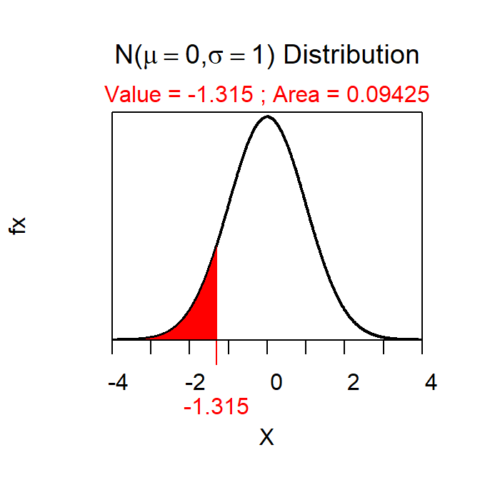
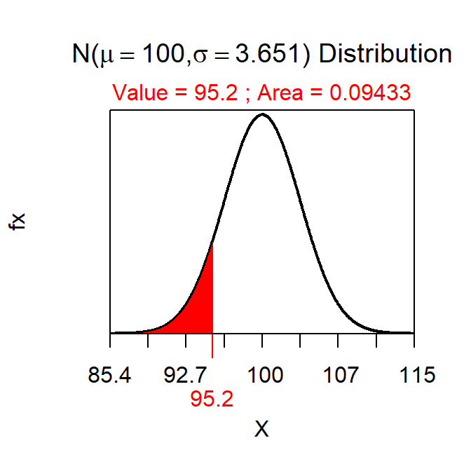
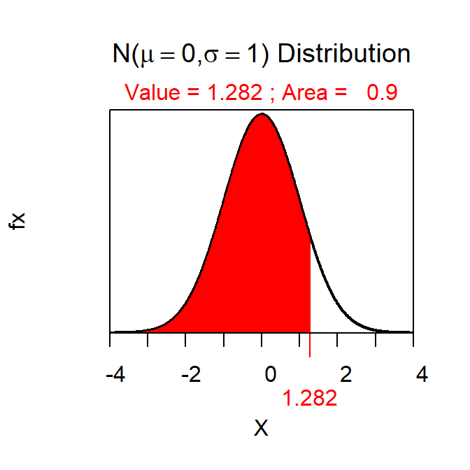
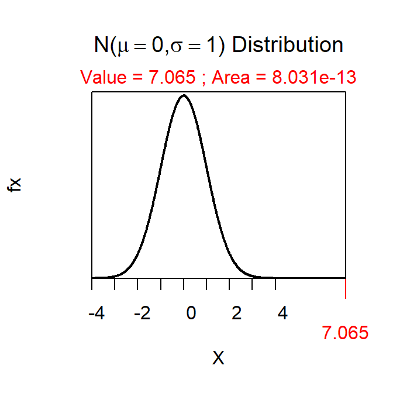
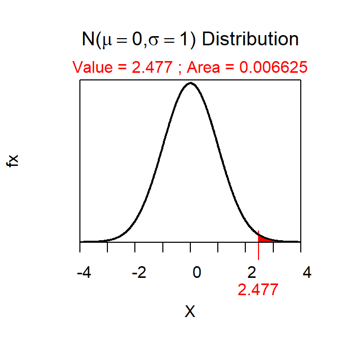
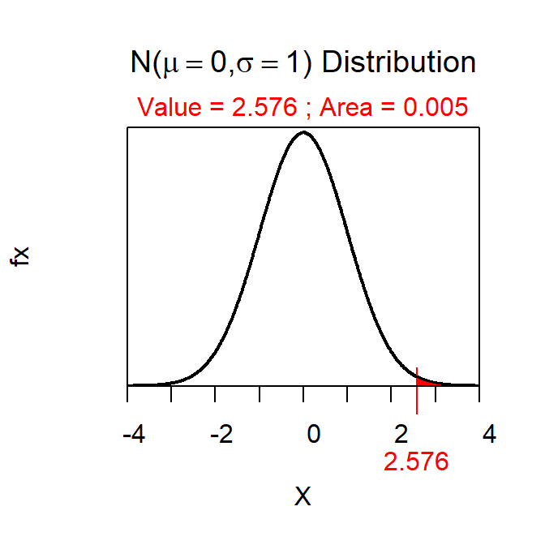

Differences Between Z and Z*
When applying the 11-steps of any Hypothesis Test to a 1-Sample Z-test, you will compute a Z test statistic in Step 6 and Z\(^{*}\) “critical value” when constructing a confidence region in Step 11. These two values both come from the standard normal (i.e., Z) distribution, but they are NOT THE SAME and, thus, it is important to understand how they differ.
The Z test statistic is computed with \(Z=\frac{\bar{x}-\mu_{0}}{\frac{\sigma}{\sqrt{n}}}\) and is a measure of how many standard errors (i.e., \(\frac{\sigma}{\sqrt{n}}\)) the sample mean (\(\bar{x}\)) is from the hypothesized population mean (\(\mu_{0}\)). As [shown here] its actual calculation depends on what “more extreme” means from HA. It is ultimately used to compute the p-value so that (with α) you can make a decision about H0.
Z\(^{*}\) is a critical value that determines how many standard errors wide a confidence regions should be so that it will contain the parameter (e.g., \(\mu\)) the confidence level (e.g., 90, 95, or 99%) of times. As shown here Z\(^{*}\) depends on the level of confidence and what “more extreme” means from HA.
Note:
-
The Z test statistic is always computed from \(Z=\frac{\bar{x}-\mu_{0}}{\frac{\sigma}{\sqrt{n}}}\). It will be used in a FORWARD calculation to find the p-value (i.e., the area “more extreme” of Z).
-
Z\(^{*}\) is always computed from a REVERSE calculation (i.e., the Z with the level of confidence “more extreme”).
First Example
Suppose that I hypothesized that the mean time to take a quiz is less than 100 minutes and that, in a sample of 30 students, the mean time to take the quiz was 95.2 minutes. Further, suppose that σ=20 and α=0.10. For simplicity below, note that the SE is \(\frac{20}{\sqrt{30}}\)=3.651 and the level of confidence is 100(1-0.10)=90%.
In this case, the Z test statistic is \(\frac{95.2-100}{3.651}\)=-1.315. This means that the sample mean (95.2) is 1.3 standard errors less than the hypothesized mean (100). Ultimately this results in a p-value of 0.0943 as computed with
> distrib(-1.315) # recall mean=0, sd=1, and lower.tail=TRUE are defaults

which is the same (within rounding) as what would be computed with the more familiar
> distrib(95.2,mean=100,sd=20/sqrt(30))

This p-value is less than α so we would NOT reject H0 and conclude that it does not take significantly less than a mean of 100 minutes for ALL students to take the quiz.
In this case we will constuct a 90% upper confidence bound for μ. Thus, Z\(^{*}\) is the Z that has 90% UPPER (i.e., the direction of HA) and is 1.282 as computed with
> distrib(0.90,type="q") # recall mean=0, sd=1, and lower.tail=TRUE are defaults

The upper confidence bound value is thus 95.2+1.282\(\frac{20}{\sqrt{30}}\) = 95.2+4.7=99.9. Thus, I am 90% confident that the mean time for all students to take the quiz is less than 99.9 minutes.
In this example, note how the Z test statistic (-1.315) is not related at all to Z\(^{*}\) except that they both are from a Z distribution (mean=0, sd=1) and the shaded area was in the same direction (because both use HA. Make note of this in the next two examples as well.
Second Example
Suppose that I hypothesized that the mean time to walk between the Science Center and the Ponzio Center is more than 7 minutes and that, in a sample of 50 students, the mean time to make this walk was 8.3 minutes. Further, suppose that σ=1.3 and α=0.05 so that SE=\(\frac{1.3}{\sqrt{50}}\)=0.184 and the level of confidence is 95%.
The Z test statistic is \(\frac{8.3-7}{0.184}\)=7.065 which results in a p-value of 0.0000000000008031 and a clear rejection of H0.
> distrib(7.065,lower.tail=FALSE)

The 95% lower confidence bound uses Z\(^{*}\)=-1.282 as found with
> distrib(0.95,type="q",lower.tail=FALSE)

The lower confidence bound value is thus 8.3-1.645\(\frac{1.3}{\sqrt{50}}\) = 8.3-0.30=8.00 and I am 90% confident that the mean time for all students to walk between the Science Center and the Ponzio Center is more than 8.00 minutes.
Third Example
Suppose that I hypothesized that the mean time students spend preparing for the prep check is different than 30 minutes and that, in a sample of 40 students, the mean preparation time was 33.8 minutes. Further, suppose that σ=9.7 and α=0.01 so that SE=\(\frac{9.7}{\sqrt{40}}\)=1.534 and the level of confidence is 99%.
The Z test statistic is \(\frac{33.8-30}{1.534}\)=2.477 which results in a half p-value of 0.0066 and a whole p-value of 0.0132 which results in NOT rejecting H0.
> distrib(2.477,lower.tail=FALSE)

The 99% confidence interval uses Z\(^{*}\)=±2.576 as shown below.
> distrib(0.005,type="q",lower.tail=FALSE)

The confidence interval is 33.8±2.576\(\frac{9.7}{\sqrt{40}}\) = 33.8±3.95=(29.85,37.75). Thus, I am 99% confident that the mean time that all students spend preparing for the prep checks is between 29.85 and 37.75 minutes.